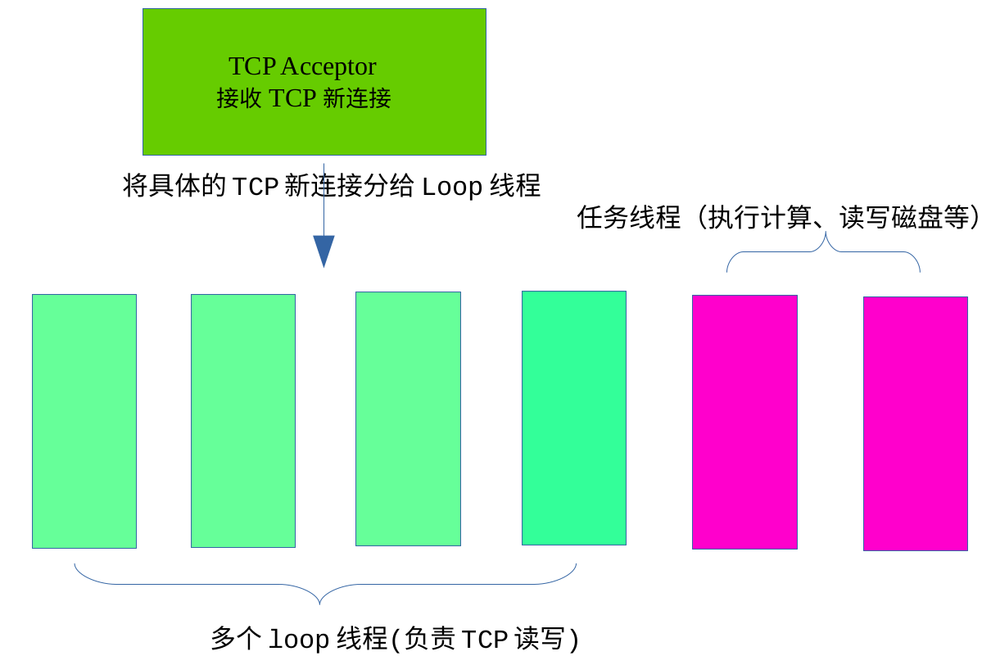
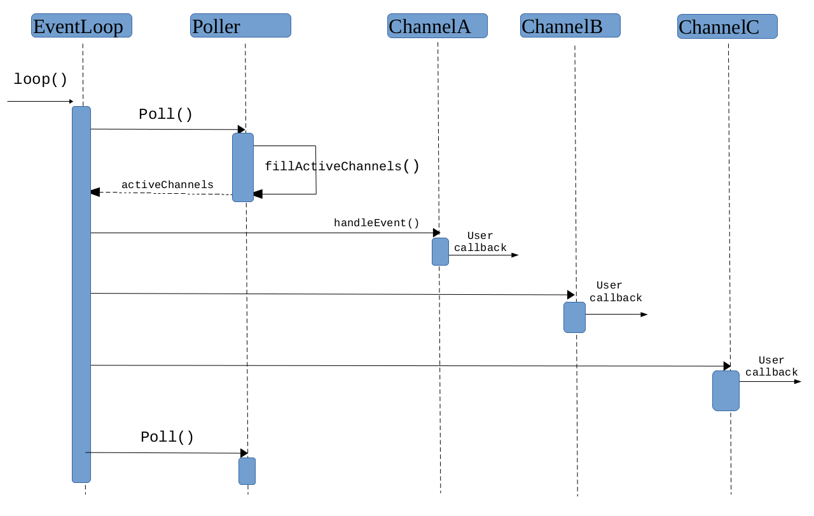

tcp多线程服务器总结
我试图用几千字描述完我这一个月的学习成果，所以，很多地方只能做个大致介绍。
服务器总体结构

为什么要采用多线程结构？可以带来哪些优势？
因为现在的CPU都是多核，线程比较廉价。多线程结构可以提高响应速度，让IO与计算相互重叠，降低latency。
多线程带来的编程复杂性怎么解决?
One loop one thread！使得线程间的耦合降到最低，仅少数地方加锁。
我主要分三部分介绍，Reactor事件循环、定时器、TCP服务器
第一部分 Reactor事件循环
reactor由三个基本的类购成，EventLoop、Poller、channel，前者是后者的数据成员。
EventLoop的功能:找出活动的事件，执行该事件的回调。
EventLoop的一个样子:
class EventLoop{
loop();
Poller poller_;
};
void EventLoop::loop()
{
while(true)
{
activeChannels;
poller_(&acctiveChannels);//将活动事件填充到activeChannel
for(auto it : activeChannels)
it->handleEvent(); //执行对应事件的回调
}
}
暂时将poller看作是一个黑盒子，下文介绍。 事实上，EventLoop还有一些非常重要的数据管理函数，如runInLoop():它可以在线程间分配任务,起到消除race condition的作用，我稍后介绍。
Poller的功能：监视所有建立的文件描述符(fd)，找出其中处于活动状态的fd.
Poller的样子：
class Poller{
poll();
fds_; //所有fd
map<int,Channel*> channelMap_; //每一个fd对应的channel
};
void Poller::poll(int timeoutMs,ChannelList* activeChannels)
{
int numEvents = ::poll(&*fds_.begin(),fds_.size(),timeoutMs);
if(numEvents >0 )
{
fillActiveChannels(numEvents,activeChannels);
}
}
Poller::poll最终调用Linux IO multiplexing函数poll，可以使用epoll提高性能。 暂时将其中的channel看作是黑盒子，它的功能是：事件分发，即回调该fd上活动事件，如tcp可读、定时器超时。 事实上，Poller还有一些非常重要的数据管理函数，有兴趣的可以查看代码。
Channel的功能：事件分发
channel的样子：
Channel{
handleEvent();
EventLoop* loop_; //所属的Loop
int fd; // 对应的文件描述符
int events_; //关注的事件
int revents_; //该文件描述符上正在发生的事件(由poll得知)
CallBack readCallback_; //回调函数
CallBack writeCallback_;
CallBack errorCallback_;
};
//以fd可读为例
void Channel::handleEvent()
{
//poller会将revents_更新
if(revents_ & (POLLIN | POLLPRI | POLLRDHUP) //说明fd上出现可读事件
readCallback_(); //执行相应的回调
}
以上三个类及其简陋，但是构成了Reactor的核心结构，请看时序图  我大致描述一下上面的过程:首先，loop调用poll()进入内核，内核返回活动的fd,并将每一个活动的fd所发生的事件类型记录在revents_上。一个fd对应一个channel(poller中)，因此我们可以快速找到channel，并根据channel的revents_执行对应的回调函数。
PS:如今回过头来看，发现Reactor也就是这么一回事儿。